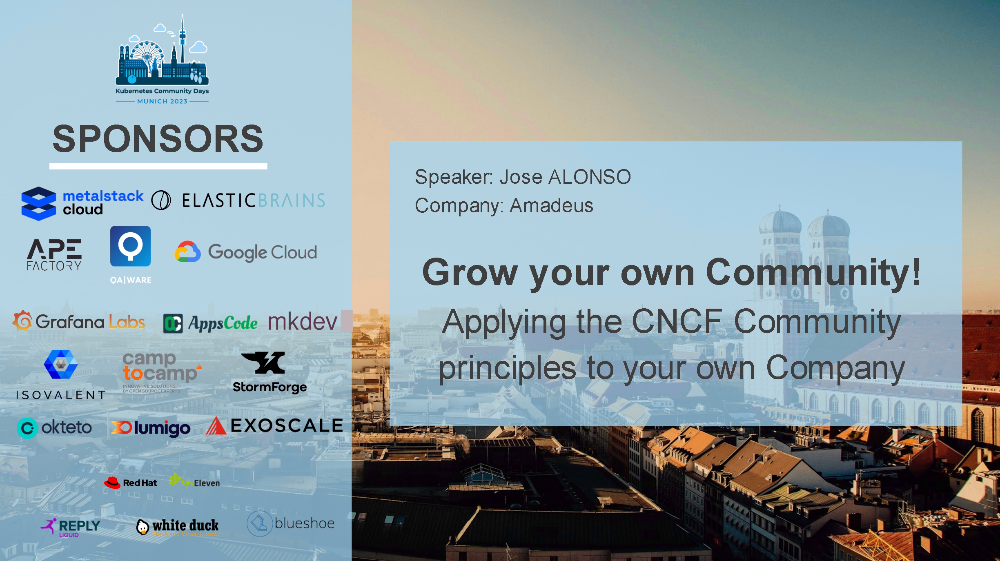
This is the story of Ted
A shift in roles
Ted meets scrum
Ted goes cloud native
Silos everywhere
Suffering in Software Engineering
@aprilwensel
- Stress and burnout
- Impostor Syndrome
- "Talent shortage" myth
- Poor user experience in our product
- Unethical products
- Failed projects
Conway's Law
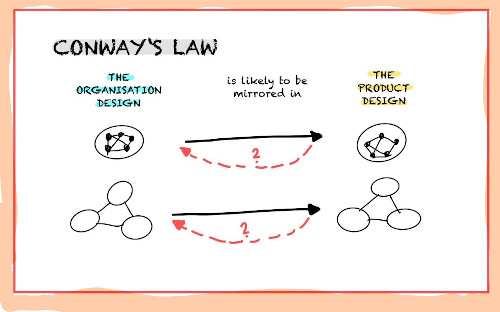
@marcelsemmler
And every organization have their own… troubles
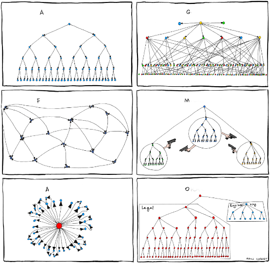
Communities of Practice
Group of people that share a passion or concern for what they do and interact regularly to make it better
Why?
- Break out knowledge and communication silos across teams in your orga
- Sense of belonging: Helps fight isolation
- Help embrace tech transformations
- Empowers inner sourced solutions, plugin architectural patterns and collective innovation
- Helps create standars
How?
My community journey…
About me
/home/jalonsomoya/
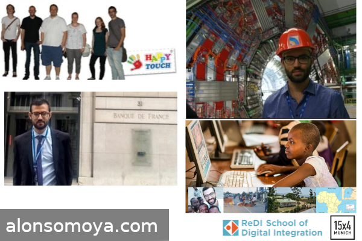
Amadeus


The rules of the game
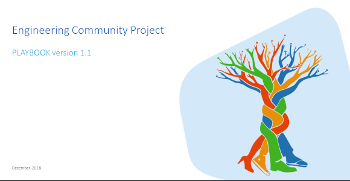
Different from traditional schemas
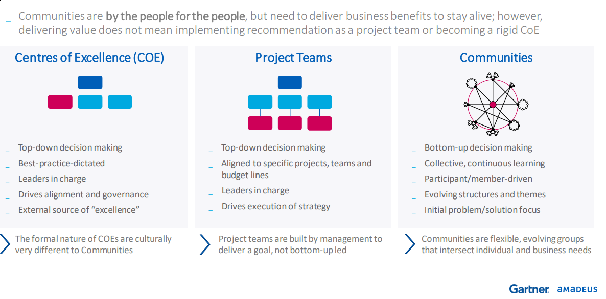
Common priorities
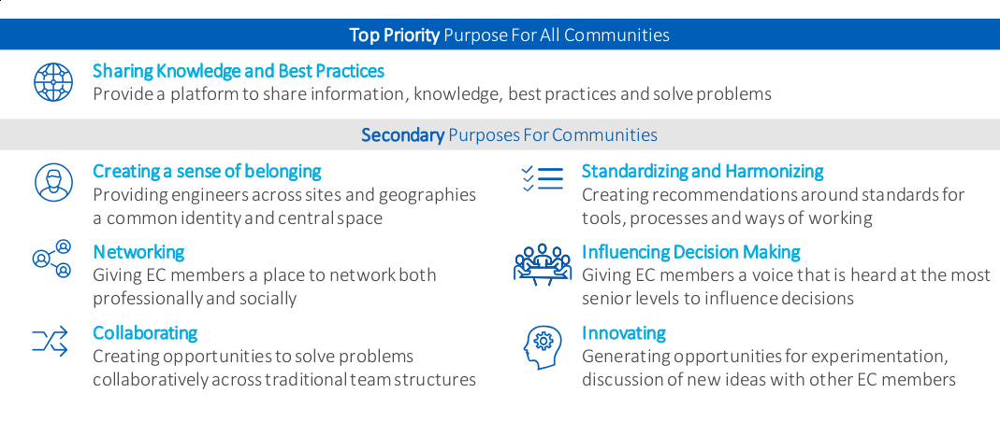
Vibrant Ecosystem
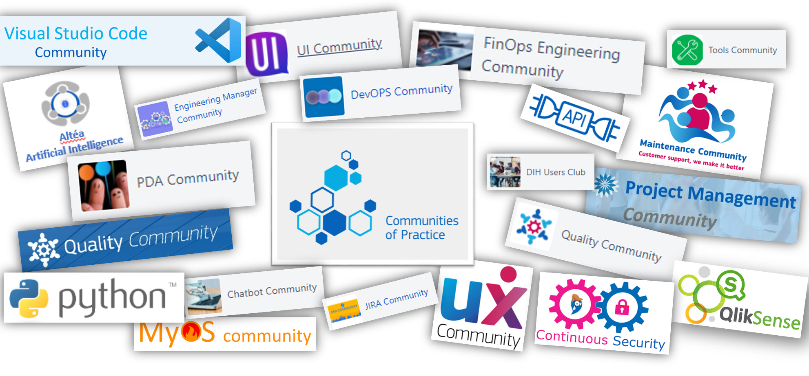
DevOps Community
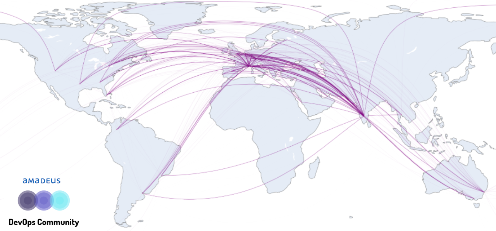
Learning from CNCF and the open source world
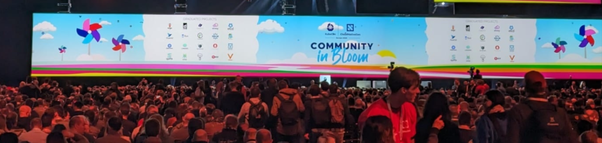
Slack -> Community Support Channel
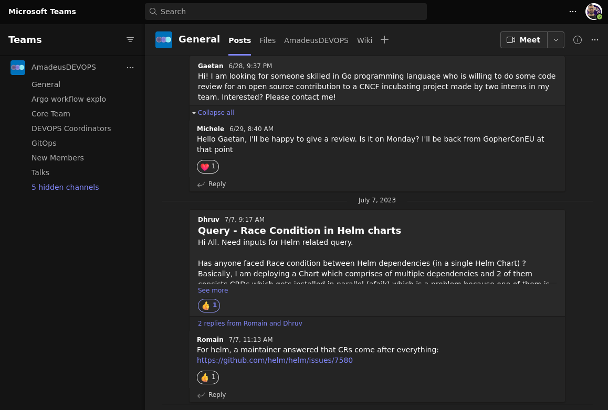
Project Documentation -> Community Knowledge Base
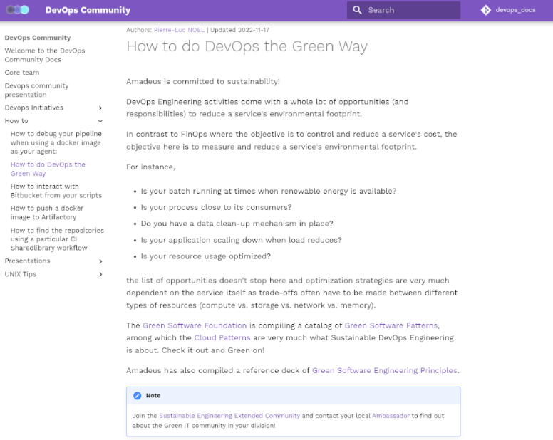
Blog Posts
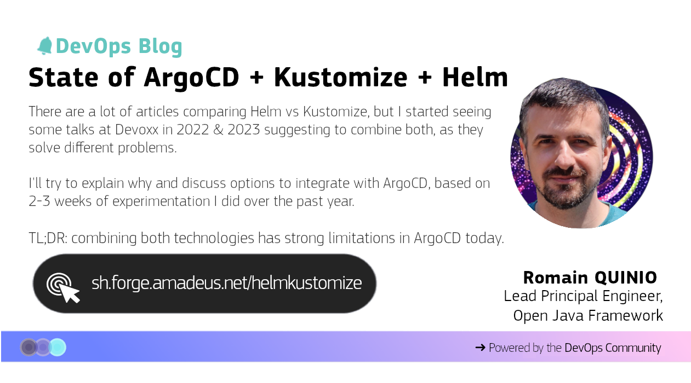
Github issues -> Community Initiatiatives
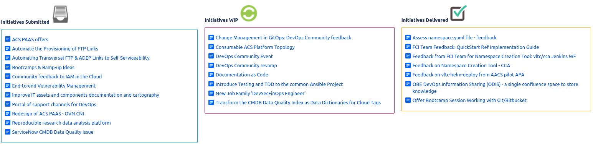
WG Meetings -> Community Knowledge
KCDs -> Community Events
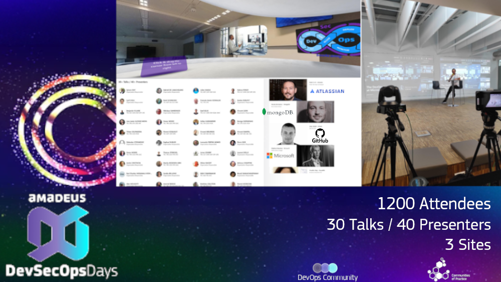
Even mimicing the organization
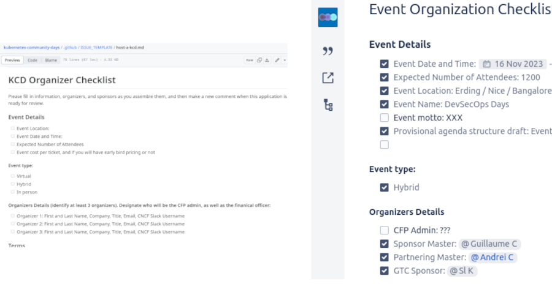
Some results a year later
- DevOps transformation
- Consultancy Body
- Inner sourced, as-code
- A great knowledge asset for our cloudification
- Promoting upstream contributions to several CNCF projects
In the age of collective intelligence…
… we are better together